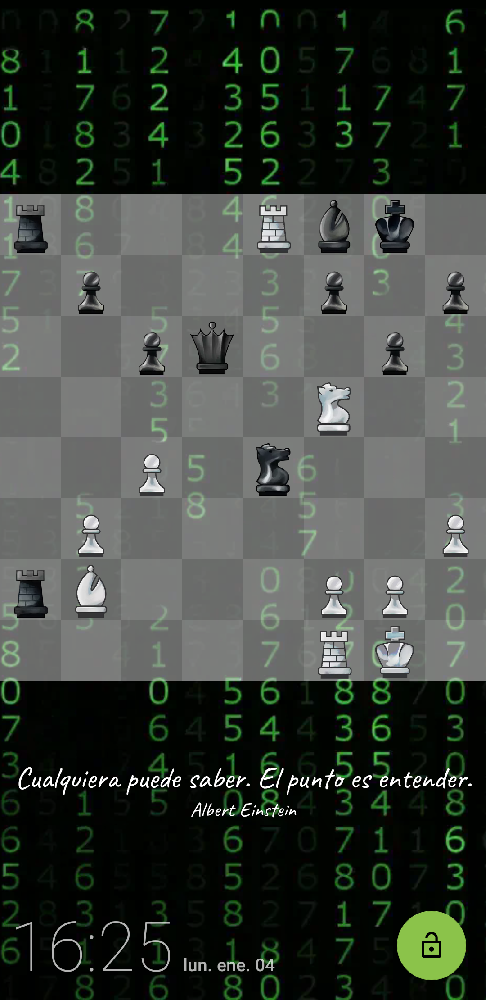

Trabajos en los que he colaborado
Beacon: The Awakening

Este proyecto ha sido hecho en Unity3D.
El arte ha sido hecho a mano, frame por frame.
He sido el programador principal del proyecto.
La metodología de desarollo ha sido Scrum.
Ver más detalles aquí ChessLocker
En Sheldrybox Studios fuimos contratados por un cliente para crear una pantalla de bloqueo que desbloquea con acertijos de Ajedrez.
Trabajamos los desafios de Android, respondiendo a la pantalla de alarmas y de llamadas para que se desbloquee temporalmente el dispositivo.
Permite desbloquear mediante 3 maneras distintas. Tiene una gran variedad de temas de piezas y tableros.
Programada en Kotlin.
Fuí el programador del proyecto. Fue un trabajo altamente iterativo con el cliente. Como metodología de desarrollo usamos Kanban.
Appohome
En desarrollo
App comicionada por un cliente para permitir conectar personas que brindan servicios como cortes de cabello, barberia, manicure, pedicure y otros de cuidado personal con clientes que desean cuidar su persona desde casa. Brinda servicios de busqueda, agendar citas, automatizar cobros.
Orange
En desarrollo
Un cliente alternativo para la red social Reddit.
Escrita en Kotlin.
Help
En beta
Una aplicación para situaciones de pelígro.
Tiene una alarma ruidosa para alertar a gente cercana.
Adicionamente tiene un modo para mandar mensajes de la ubicación a números definidos por el usuario.
Escrita en Kotlin
Quicklauncher
Un reemplazo de pantalla de inicio para Android sencillo con una lista de aplicaciones.
MedMember
Una aplicación en beta que recuerda al usuario la hora para tomar sus medicamentos.
Tiene alarma cuando es la hora.
Si el usuario entra el tamaño de dosis y la cantidad que tiene la caja, puede recordar al usuario cuando es tiempo de comprar más dosis.
Escrita en Kotlin, usa librerías como Room para manejar las bases de datos.
Google Play y el logotipo de Google Play son marcas comerciales de Google LLC.